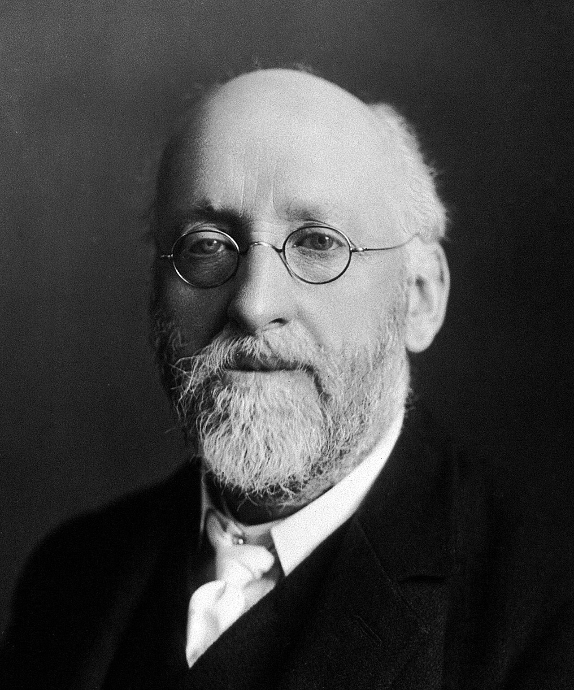
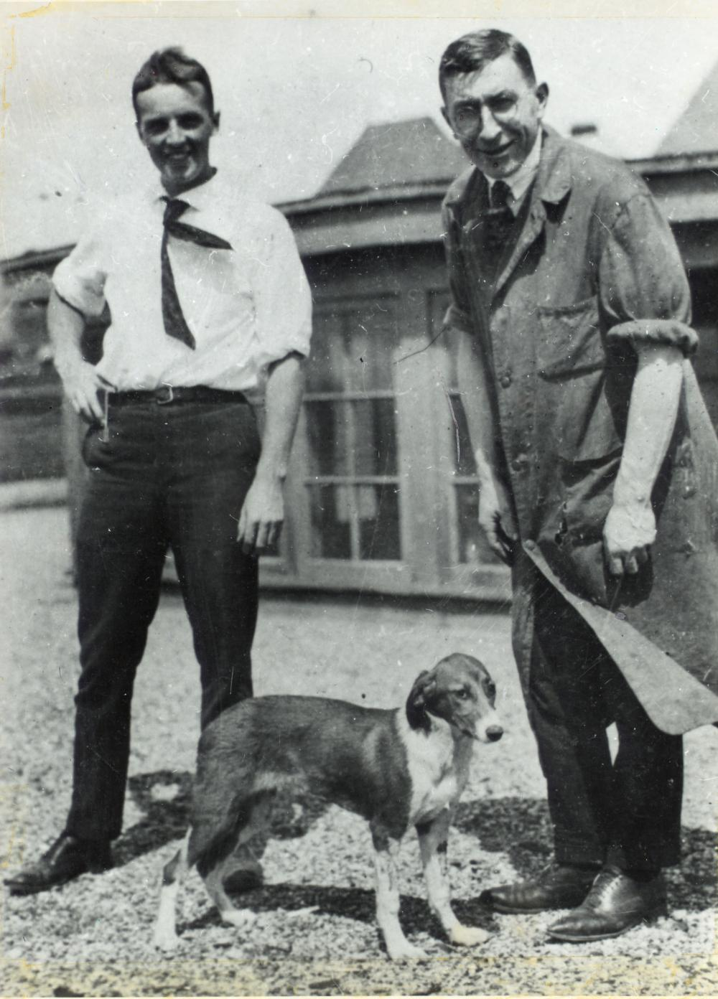

激素与内分泌系统
本期导读
实验分析 · 腺体与激素 · 作用特点
视频原话 · 导读3 句
- 同学们好！这节课一轮复习人教版选择性必修一第三章第一节——激素与内分泌系统。8.6s
- 这一节高考常考三类题：激素发现的实验分析、腺体与激素的对应，以及激素的作用与特点。8.9s
- 我们按九个考点梳理，每个考点都讲清楚怎么考、怎么做。5.5s
促胰液素的发现01#
当时的观点
胃酸
→刺激小肠神经
→兴奋传到胰腺
→分泌胰液
沃泰默 实验①
稀盐酸 → 小肠肠腔
✓ 胰腺分泌胰液
沃泰默 实验②
稀盐酸 → 血液
✗ 不分泌
沃泰默 实验③
切除小肠神经，只留血管
稀盐酸 → 小肠肠腔
✓ 仍然分泌胰液

假设：这是化学调节
剪下小肠
→刮下黏膜
→+稀盐酸、砂子磨碎
→提取液
→注射到同一条狗的静脉
→ 胰腺分泌胰液 ✓
促胰液素小肠黏膜分泌 → 血液 → 胰腺，促进胰液分泌第一种被发现的激素
沃泰默的结论
“这是一个顽固的神经反射”——小肠上的神经没剔除干净（固守旧观点）
考法
实验①与②对照 → 胰液分泌不是盐酸直接作用于胰腺
刮下黏膜并磨碎 → 彻底排除神经调节的干扰
易错
促胰液素：小肠黏膜分泌，作用于胰腺
胰液：消化液，经导管进入小肠（外分泌），不是激素
胰液：消化液，经导管进入小肠（外分泌），不是激素
视频原话10 句
- 考点一，促胰液素的发现。3.0s
- 19世纪，人们普遍认为：胃酸刺激小肠的神经，神经把兴奋传给胰腺，胰腺分泌胰液。8.7s
- 沃泰默做了三组实验：稀盐酸注入小肠肠腔，胰腺分泌胰液；稀盐酸直接注入血液，不分泌；9.2s
- 切除通向这段小肠的神经，只留血管，再把稀盐酸注入小肠，仍然分泌。7.1s
- 但沃泰默固执地认为，这是小肠上的神经没有剔除干净，是一个“顽固的神经反射”。7.5s
- 斯他林和贝利斯大胆假设：这是化学调节。他们剪下小肠，刮下黏膜，与稀盐酸混合磨碎制成提取液，10.5s
- 注射到同一条狗的静脉中，胰腺分泌了胰液。这种物质叫促胰液素，是人们发现的第一种激素。8.6s
- 考法：常考实验对照的含义。第一组和第二组对照，说明胰液分泌不是盐酸直接作用于胰腺；9.2s
- 刮下黏膜再磨碎，目的是彻底排除神经调节的干扰。5.4s
- 易错：促胰液素由小肠黏膜分泌，作用于胰腺；而胰液是消化液，经导管排出，不是激素。9.2s
胰岛素的发现02#

1921 年，班廷（右）与助手贝斯特（左）
用结扎胰管的方法提取到胰岛素
用结扎胰管的方法提取到胰岛素
切除狗的胰腺减法
→ 患糖尿病（胰腺中有降血糖物质）
直接研磨胰腺，制成提取液注射
→ 收效甚微
结扎胰管 → 外分泌部萎缩，只剩胰岛 → 制备提取液注射加法
→ 糖尿病狗血糖迅速下降
降血糖的物质：胰岛素
考法
问：直接研磨胰腺为何提取不到胰岛素？
答：胰岛素是蛋白质，被胰液中的胰蛋白酶分解。
答：胰岛素是蛋白质，被胰液中的胰蛋白酶分解。
结扎目的
使外分泌部萎缩，不再产生胰蛋白酶，避免胰岛素被分解
原理
切除胰腺 → 减法原理；注射胰岛提取液 → 加法原理
视频原话9 句
- 考点二，胰岛素的发现。2.7s
- 胰腺包括两部分：外分泌部分泌胰液，含胰蛋白酶；内分泌部就是胰岛。7.1s
- 科学家发现，切除胰腺的狗会患糖尿病，推测胰腺中有一种降血糖的物质。7.4s
- 可是把胰腺直接研磨制成提取液，注射给糖尿病狗，却收效甚微。6.5s
- 班廷想到：结扎胰管，让外分泌部萎缩，只剩下胰岛，再用它制备提取液，7.5s
- 注射给糖尿病狗，血糖迅速下降。这种物质就是胰岛素。6.2s
- 考法：为什么直接研磨胰腺提取不到胰岛素？因为胰岛素是蛋白质，会被胰液中的胰蛋白酶分解。9.5s
- 结扎胰管，就是为了让外分泌部萎缩，避免胰岛素被分解。5.7s
- 另外，切除胰腺属于减法原理，注射胰岛提取液属于加法原理。6.3s
加法与减法原理03#
① 摘除公鸡睾丸 减法
→ 雄性性征明显消失
② 将睾丸移植回去 加法
→ 雄性特征逐步恢复
后来从睾丸中提取出睾酮（雄激素）
结论：睾丸分泌的雄激素维持雄性性征
结论：睾丸分泌的雄激素维持雄性性征
减法原理
与常态比较，人为去除某种影响因素
●摘除睾丸、切除胰腺
●切除甲状腺
●艾弗里实验：加 DNA 酶
加法原理
与常态比较，人为增加某种影响因素
●移植睾丸
●注射胰岛提取液
●饲喂甲状腺激素
考法
判断实验用了哪种原理：去掉某因素 → 减法；添加某因素 → 加法。注意跨章节迁移！
视频原话6 句
- 考点三，睾丸分泌雄激素的研究，以及实验中的加法原理和减法原理。6.9s
- 1849年，科学家摘除公鸡的睾丸，公鸡的雄性性征明显消失，比如鸡冠萎缩、不再鸣啼求偶。9.3s
- 把睾丸重新移植回去，公鸡的雄性特征又逐步恢复。后来科学家从睾丸中提取出了睾酮，也就是雄激素。10.2s
- 与常态相比，人为去除某种影响因素，叫减法原理，比如摘除睾丸；6.9s
- 人为增加某种影响因素，叫加法原理，比如移植睾丸、注射激素。6.6s
- 考法：判断实验用了哪种原理。还要会跨章节迁移：艾弗里实验中，用DNA酶处理提取物，也是减法原理。10.7s
研究方法与对照04#
摘除法减法
切除甲状腺、摘除睾丸
移植法加法
移植睾丸、卵巢
注射法加法
注射胰岛素、生长激素
饲喂法加法
蝌蚪饲喂甲状腺激素
仅限不会被消化的激素
对照组怎么设？
实验处理
对照组
目的
摘除 / 切除
假手术：做相同手术但不摘除
排除手术创伤的影响
注射
注射等量生理盐水（或溶剂）
排除注射操作、溶剂的影响
例题探究甲状腺激素对小鼠代谢的影响：甲组切除甲状腺，乙组应如何处理？检测什么指标？
乙组：做手术但不切除甲状腺
指标：耗氧量（反映代谢强弱）
预期：甲组耗氧量 低于 乙组
指标：耗氧量（反映代谢强弱）
预期：甲组耗氧量 低于 乙组
进一步：给甲组注射甲状腺激素，耗氧量恢复
“先减后加”，证明作用来自甲状腺激素
“先减后加”，证明作用来自甲状腺激素
视频原话8 句
- 考点四，研究激素功能的常用方法和对照设计，这是实验大题的高频考点。7.3s
- 常用方法有四种：摘除法、移植法、注射法和饲喂法。5.7s
- 注意，饲喂法只适用于不会被消化的激素，比如用含甲状腺激素的饲料喂蝌蚪，它会提前变成小青蛙。9.7s
- 对照组怎么设？摘除实验的对照组要做假手术，即做相同手术但不摘除，排除手术本身的影响。9.9s
- 注射实验的对照组，注射等量的生理盐水或溶剂。4.9s
- 来看例题：探究甲状腺激素对小鼠代谢的影响。甲组切除甲状腺，乙组应如何处理？测什么指标？10.5s
- 乙组：做手术但不切除甲状腺。指标：耗氧量。预期甲组耗氧量低于乙组。8.7s
- 若要进一步证明是甲状腺激素的作用，可以给甲组注射甲状腺激素，耗氧量恢复。这就是“先减后加”。9.8s
内分泌系统组成05#
下丘脑
促～激素释放激素（如 TRH）；合成抗利尿激素
垂体
生长激素；促甲状腺激素、促性腺激素、促肾上腺皮质激素
甲状腺
甲状腺激素（含碘）
肾上腺
皮质：醛固酮、皮质醇；髓质：肾上腺素
胰岛
A 细胞：胰高血糖素；B 细胞：胰岛素
性腺
睾丸：雄激素；卵巢：雌激素、孕激素
易错
抗利尿激素：下丘脑合成、垂体释放，不是垂体合成
视频原话8 句
- 考点五，内分泌系统的组成。它由内分泌腺和分散在一些器官中的内分泌细胞组成。8.5s
- 下丘脑：分泌多种促激素释放激素，如促甲状腺激素释放激素；还合成抗利尿激素，由垂体释放。10.1s
- 垂体：分泌生长激素，以及促甲状腺激素、促性腺激素、促肾上腺皮质激素等促激素。9.0s
- 甲状腺：分泌甲状腺激素，合成需要碘。4.5s
- 肾上腺：皮质分泌醛固酮、皮质醇，髓质分泌肾上腺素。6.4s
- 胰岛：A细胞分泌胰高血糖素，B细胞分泌胰岛素。5.3s
- 性腺：睾丸分泌雄激素，卵巢分泌雌激素和孕激素。5.7s
- 考法：腺体与激素的对应是基础送分题。易错：抗利尿激素由下丘脑合成、垂体释放，不是垂体合成的。11.0s
主要激素的功能06#
甲状腺激素
调节有机物代谢；促进生长和发育；提高神经系统的兴奋性
生长激素
调节生长发育：促进蛋白质合成和骨的生长
胰岛素
降低血糖（唯一能降血糖的激素）
胰高血糖素
升高血糖
肾上腺素
升高血糖；提高机体的应激能力
性激素
促进生殖器官发育和生殖细胞形成，激发并维持第二性征
协同作用：效果相同
生长激素+甲状腺激素→促进生长发育
胰高血糖素+肾上腺素→升高血糖
相抗衡：效果相反
胰岛素（降血糖）⇄胰高血糖素（升血糖）→维持血糖平衡
考法
激素与功能常被打乱配对：降血糖只有胰岛素；促进发育、提高神经系统兴奋性是甲状腺激素。
视频原话8 句
- 考点六，主要激素的功能，以及激素之间的相互作用。5.1s
- 甲状腺激素：调节有机物代谢，促进生长和发育，提高神经系统的兴奋性。7.6s
- 生长激素：调节生长发育，促进蛋白质合成和骨的生长。6.3s
- 胰岛素是唯一能降低血糖的激素；胰高血糖素和肾上腺素能升高血糖。7.2s
- 肾上腺素还能提高机体的应激能力；性激素促进生殖器官发育和生殖细胞形成，维持第二性征。9.6s
- 激素之间的关系：作用效果相同，叫协同作用，比如生长激素和甲状腺激素都促进生长发育；9.2s
- 作用效果相反，叫相抗衡，比如胰岛素和胰高血糖素。5.5s
- 考法：选择题常把激素和功能打乱配对。记住降血糖只有胰岛素，和促进发育、提高兴奋性的是甲状腺激素。11.3s
激素的化学本质07#
蛋白质 / 多肽类
下丘脑、垂体分泌的激素
胰岛素、胰高血糖素
促胰液素
只能注射
氨基酸衍生物
甲状腺激素
肾上腺素
可注射，也可口服
类固醇
性激素
醛固酮、皮质醇
可注射，也可口服
考法
问：糖尿病人为什么注射而不口服胰岛素？
答：胰岛素是蛋白质，口服会在消化道中被蛋白酶分解而失效。
答：胰岛素是蛋白质，口服会在消化道中被蛋白酶分解而失效。
视频原话7 句
- 考点七，激素的化学本质，它决定了激素能不能口服。5.6s
- 蛋白质和多肽类：下丘脑和垂体分泌的激素、胰岛素、胰高血糖素、促胰液素。7.9s
- 氨基酸衍生物：甲状腺激素和肾上腺素。4.7s
- 类固醇：性激素、醛固酮、皮质醇。4.2s
- 蛋白质类激素口服会被消化酶分解，所以只能注射，不能口服；另外两类既可注射也可口服。9.1s
- 拓展：蛋白质类激素不能进入细胞，受体在细胞膜上；性激素是脂溶性的，受体在细胞内。9.1s
- 考法：糖尿病人为什么注射而不口服胰岛素？答：胰岛素是蛋白质，口服会在消化道中被分解而失效。10.6s
分泌异常与疾病08#
激素
异常情况
疾病
特点
生长激素
幼年分泌不足
侏儒症
身材矮小，智力正常
甲状腺激素
幼年分泌不足
呆小症
身材矮小，智力低下
生长激素
幼年分泌过多
巨人症
生长激素
成年分泌过多
肢端肥大症
甲状腺激素
分泌过多
甲亢
消瘦、易激动
甲状腺激素
缺碘，合成不足
地方性甲状腺肿
大脖子病
胰岛素
胰岛 B 细胞受损
糖尿病
考法
侏儒症与呆小症都“矮小”，区别看智力；判断病因先分清幼年还是成年。
视频原话6 句
- 考点八，激素分泌异常与疾病。3.4s
- 幼年生长激素不足，患侏儒症，身材矮小但智力正常；幼年甲状腺激素不足，患呆小症，身材矮小且智力低下。11.4s
- 幼年生长激素过多，患巨人症；成年后过多，患肢端肥大症。6.2s
- 甲状腺激素过多，患甲亢，表现为消瘦、易激动；缺碘导致地方性甲状腺肿，俗称大脖子病。9.3s
- 胰岛B细胞受损，胰岛素分泌不足，导致糖尿病。5.1s
- 考法：侏儒症和呆小症的区别，关键看智力；病因要分清是幼年还是成年。7.7s
激素调节的特点09#
①通过体液运输
随血液流到全身
②作用于靶器官、靶细胞
靶细胞有特异性受体
③作为信使传递信息
起作用后即失活
④微量和高效
含量低，作用显著
易错
激素运输到全身各处，只作用于靶细胞；激素不组成细胞结构、不提供能量、不起催化作用。
视频原话6 句
- 考点九，激素调节的四个特点。3.3s
- 第一，通过体液运输。激素弥散到体液中，随血液流到全身。6.5s
- 第二，作用于靶器官、靶细胞，因为只有靶细胞上有相应的特异性受体。6.9s
- 第三，作为信使传递信息。激素一经靶细胞接受并起作用后就失活了，所以需要源源不断地产生。9.5s
- 第四，微量和高效。血液中激素含量很低，作用却很显著。6.5s
- 易错：激素随血液运输到全身各处，不是只运输到靶细胞；激素不组成细胞结构、不提供能量、不起催化作用。10.8s
易错速查✓
先自己判断，再点按钮查看对错与解析。
- 1促胰液素由胰腺分泌说法错误：由小肠黏膜分泌
- 2胰液属于激素说法错误：胰液是消化液，经导管排出
- 3摘除睾丸利用了减法原理说法正确。
- 4胰岛素可以口服说法错误：蛋白质，只能注射
- 5幼年缺乏甲状腺激素会患侏儒症说法错误：应为呆小症
- 6激素只运输到靶细胞说法错误：运输到全身，只作用于靶细胞
把实验逻辑练熟，这一节稳稳拿分！
视频原话 · 易错速查5 句
- 最后，用六道判断题检验一下。3.6s
- 促胰液素由胰腺分泌？错，由小肠黏膜分泌。胰液属于激素？错，胰液是消化液。9.5s
- 摘除睾丸利用了减法原理？对。胰岛素可以口服？错，它是蛋白质，只能注射。9.2s
- 幼年缺乏甲状腺激素会患侏儒症？错，是呆小症。激素只运输到靶细胞？错，运输到全身，只作用于靶细胞。11.8s
- 九个考点串成一条线：发现史、研究方法、腺体与激素、功能、本质、疾病与特点。把实验逻辑练熟，这一节稳稳拿分！12.1s
图片来源
图片来源：Wikimedia Commons —— Maull & Fox《William Bayliss》CC BY 4.0（Wellcome Collection）；H. S. Raper《Ernest Starling》公有领域；Thomas Fisher Rare Book Library, University of Toronto《F.G. Banting and C.H. Best with a dog》CC BY 2.0；Julian Lupyan《Rooster in Key West, Florida》CC0